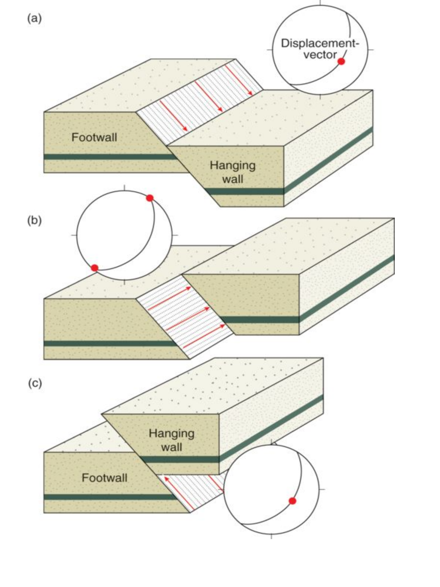
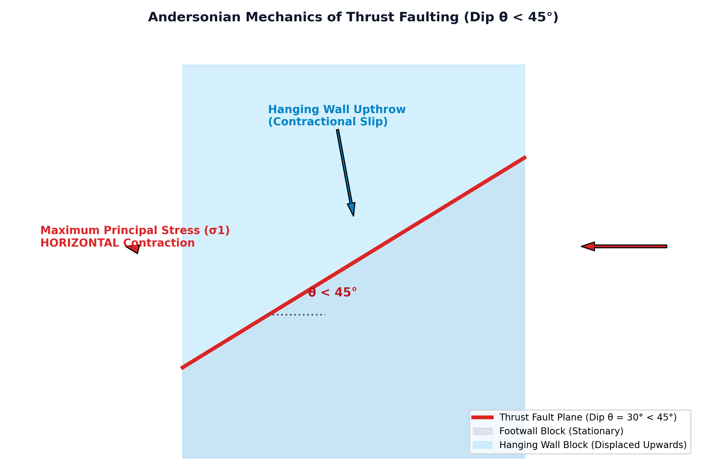

In structural geology and fault mechanics (Haakon Fossen, Structural Geology, 2010, Ch. 14, pp. 296–302; Van der Pluijm & Marshak, Earth Structure, Ch. 9; Bangar, Ch. 9), compressional dip-slip faults where the hanging wall moves upward relative to the footwall are subdivided by fault dip angle ($\theta$):
| Fault Classification | Fault Dip Angle ($\theta$) | Tectonic Context & Typical Kinematics |
|---|---|---|
| Reverse Fault (Sensu Stricto) | $\theta > 45^\circ$ (typically $60^\circ$) | High-angle crustal shortening, basement-involved block uplifts |
| Thrust Fault | $\theta < 45^\circ$ (typically $15^\circ - 30^\circ$) | Low-angle regional contractional orogenic belts (fold-and-thrust belts, subduction accretionary prisms) |
| Overthrust / Nappe | $\theta < 10^\circ - 15^\circ$ (often near-horizontal) | Large-scale regional displacement exceeding tens to hundreds of kilometers |
According to E.M. Anderson (1905, 1951), thrust faulting occurs when the maximum principal stress is horizontal ($\sigma_1 = \sigma_{xx}$) and the minimum principal stress is vertical ($\sigma_3 = \sigma_{zz} = \rho g z$).
The theoretical Coulomb fracture angle ($\theta_c$) with the horizontal plane (direction of $\sigma_1$) is:
$$\theta_c = 45^\circ - \frac{\phi}{2}$$For typical crustal rocks with internal friction angle $\phi \approx 30^\circ$, the predicted thrust fault dip angle is:
$$\theta_c = 45^\circ - 15^\circ = 30^\circ < 45^\circ$$

Correct Answer: (B) < 45° — In standard structural geology (Fossen; Billings; Bangar), a reverse fault dipping at an angle less than 45° (< 45°) is specifically designated as a Thrust fault.
A planar thrust fault dipping at $\theta = 30^\circ$ exhibits a dip-slip net slip of $S = 200\text{ meters}$. Calculate the vertical throw and horizontal heave (crustal shortening) produced by the fault.
Solution:
$$\text{Vertical Throw} = S \cdot \sin \theta = 200 \cdot \sin(30^\circ) = 200 \times 0.5 = 100\text{ meters}$$ $$\text{Horizontal Heave (Shortening)} = S \cdot \cos \theta = 200 \cdot \cos(30^\circ) = 200 \times 0.866 = 173.2\text{ meters}$$Because $\theta < 45^\circ$, the horizontal shortening ($173.2\text{ m}$) significantly exceeds the vertical displacement ($100\text{ m}$).